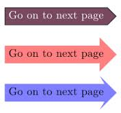

Teaching Point:
Today we will see how we can use Buttons and Broadcast to move the story forward.
Using Buttons in Scratch
The kinds of jokes that we have looked at have a question and answer. When the user presses the green flag, they will see the beginning of the joke - the Question Part. We will make a button that they can press to see the answer.The button will work using the two new pieces of code:
- WHEN CLICKED - in the control menu. Whatever goes under this block is what happens when the sprite is clicked. If I say WHEN CLICKED - MOVE 10 STEPS - the sprite will move 10 steps when you click it.
- BROADCAST - As we learned we can use it to have Sprites get instructions from other Sprites. In this case the new page will show a new background, and the Sprite acting out the joke. Later it will show the 1st Sprite telling the answer to the joke.
Today's Assignment
Make a new Sprite that says NEXT. When it is clicked, it should change the scene to the next part of the story.
Back to School Portal